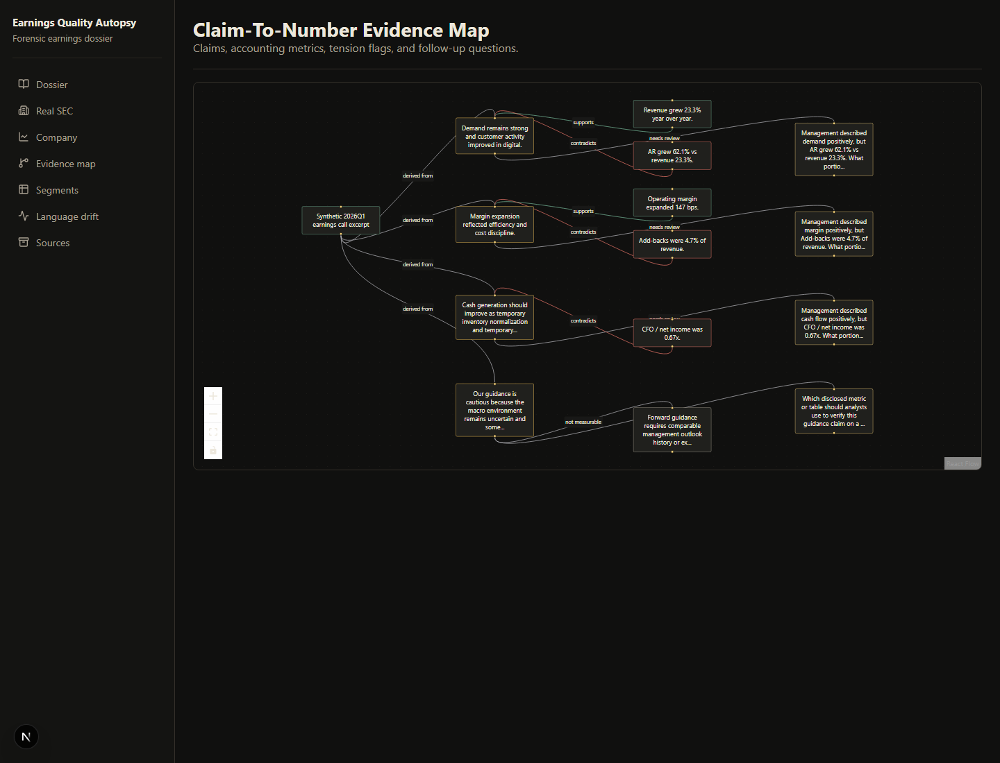
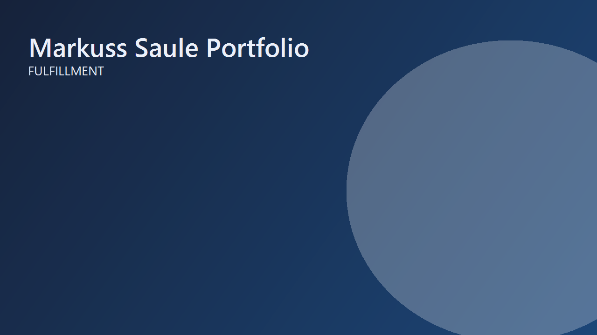
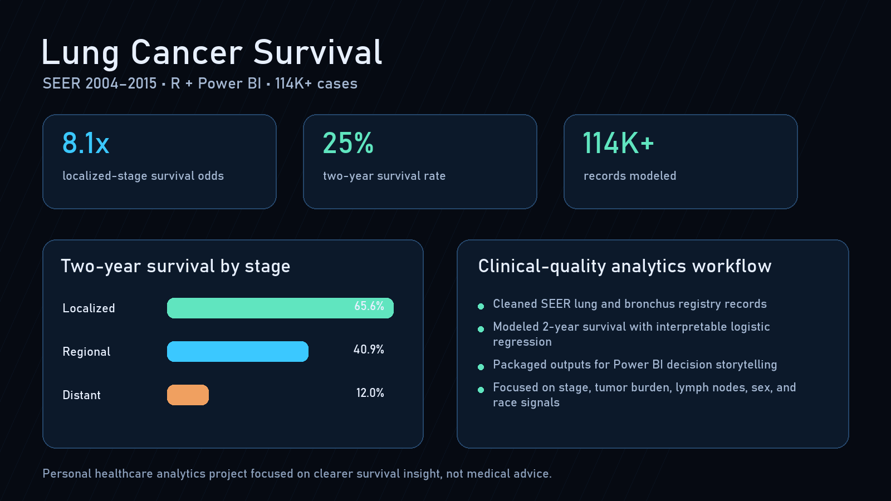
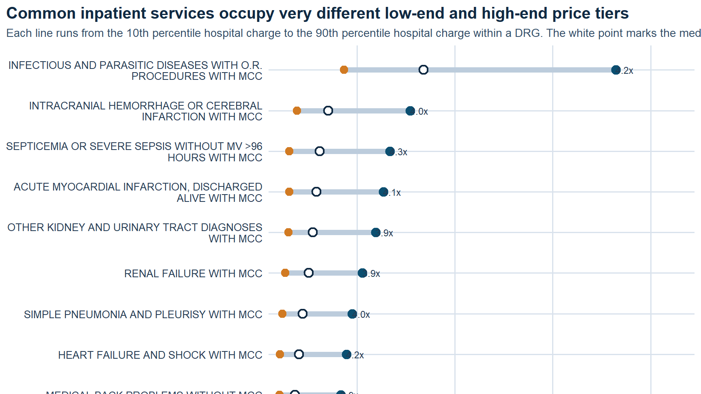
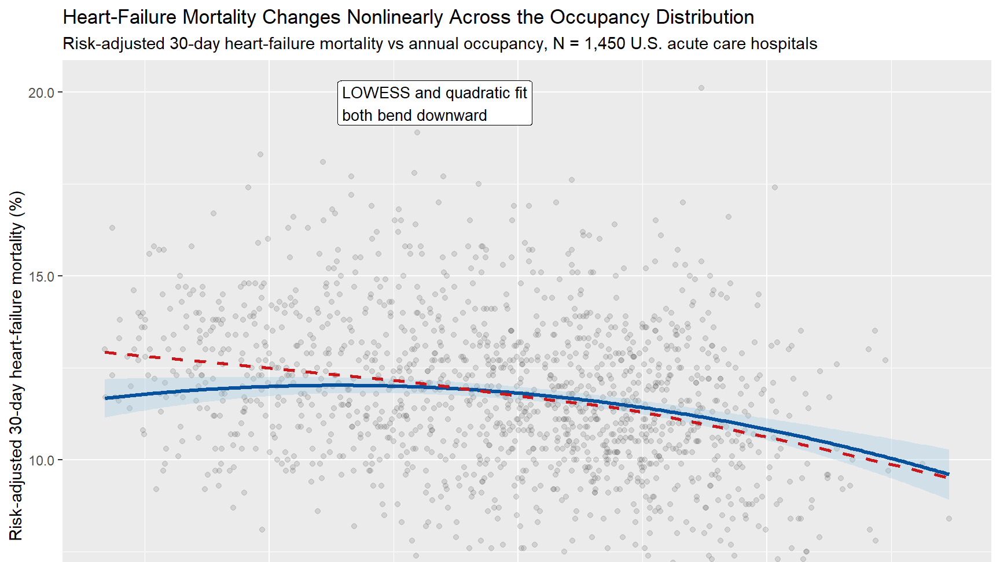

ravel*
AI, inside your analysis.RStudio / CRAN
Ravel
A CRAN-published RStudio copilot used by 2,000+ people that understands the active analysis and keeps every proposed code or file action visible and reviewable.
Tools people use. Systems I wanted to understand.
A few questions that wouldn't leave me alone.
A CRAN-published RStudio copilot used by 2,000+ people that understands the active analysis and keeps every proposed code or file action visible and reviewable.
 Healthcare AI
Healthcare AIA radiology workflow platform that connects imaging models to human review, audit trails, governance, and Power BI reporting, with its MRI evidence clearly bounded.
 Product Systems
Product SystemsTen years of shipped Roblox world, level, and game design across games, music events, and global brand activations with 7.5B+ plays.
An R package that actively tries to break a statistical result, then shows the smallest plausible change that makes the claim fragile.
Advanced Acceptance selections
Ten Advanced Acceptance selections in Microsoft Research Asia's Global AI Values Challenge for research-grounded cases that test whether an AI system can reason through human value conflicts.

Finance & RiskA forensic SEC/XBRL research platform that traces management claims through normalized fundamentals, source evidence, and documented tensions.
 Product Systems
Product SystemsA full product road-trip planner that turns routing, fuel cadence, overnight choices, trip-fit scoring, and exports into one explainable plan.
 Autonomous Systems
Autonomous SystemsA local-first AI discovery system that connects scattered data sources, builds a living world model, and surfaces material changes without waiting for a prompt.
 Simulation
SimulationA research-grade market simulator that shows how order-book rules, agent behavior, liquidity withdrawal, and controls shape market stress.

SimulationA discrete-event fulfillment model that turns queues, station pressure, SLA risk, and staffing choices into an operating decision.
A fraud-modeling workflow built for the metric that matters: finding suspicious claims without hiding behind overall accuracy.

Healthcare AnalyticsA 114,000-case SEER analysis that turns survival modeling into an interpretable view of the disease and patient factors tied to two-year outcomes.
A SQL-to-R-to-Power BI clinical analytics pipeline that connects 100,000 encounters to readmission drivers, subgroup patterns, and action-ready reporting.

Healthcare AnalyticsA CMS inpatient-pricing analysis that exposes how charge-to-payment gaps vary by service, geography, and hospital-market context.

Healthcare AnalyticsA hospital-capacity study that asks whether occupancy is just an efficiency metric or an early signal of operational pressure tied to mortality.
No projects match that search.